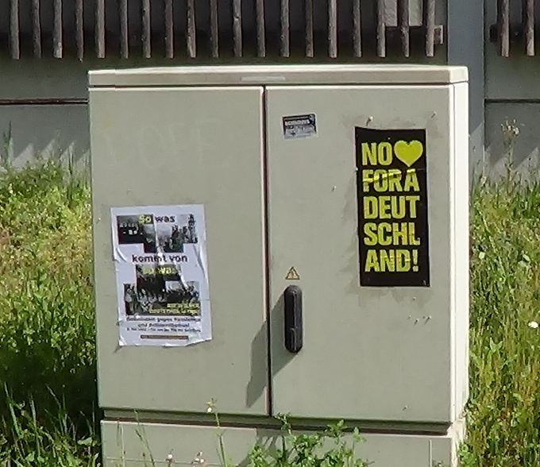

Foto: 2012 in Aschaffenburg am 9. November
Stern e.V.
Diesjähriges Programm in Aschaffenburg zum Gedenken an die Opfer der Novemberpogrome
(mehr…)
Foto: 2012 in Aschaffenburg am 9. November
Stern e.V.
Diesjähriges Programm in Aschaffenburg zum Gedenken an die Opfer der Novemberpogrome
(mehr…)
attac AB – MIL
Video und Diskussion: »LOSGELÖST VON ALLEN WURZELN … « – Im Rahmen des Aschaffenburger Gedenkens an die „Reichpogromnacht“ 1938 zeigen attac Aschaffenburg-Miltenberg und das Bündnis gegen Rechts diese Filmdokumentation mit dem Untertitel EINE WANDERUNG ZWISCHEN DEN JÜDISCHEN WELTEN.
120 MIN.
Mi., 8. November 2017, 18:00 Uhr
im „Stern“, Aschaffenburg, Platanenallee 1
Die Kulturzeitschrift Melodie und Rhythmus (M&R) widmete ihre Ausgabe 5/15 jüdischen Musiken. In diesem Rahmen initiierte die Redaktion eine besondere Begegnung: Esther Bejarano, deutsch-jüdische Musikerin und ehemaliges Mitglied des Mädchenorchesters von Auschwitz, und Moshe Zuckermann, Historiker und Kunsttheoretiker aus Tel Aviv, trafen sich zum ersten Mal.
Begleitet von ihrem gemeinsamen langjährigen Freund, dem Schauspieler und aktiven Antifaschisten Rolf Becker, sprachen sie im Oktober 2016 in Berlin und Hamburg über ihre jüdischen Erfahrungen mit der untergegangenen Welt der Diaspora und dem modernen zionistischen Staat.
Welcome to Stay Café Aschaffenburg
Am Montag, den 16.10. um 18 Uhr entscheidet der Stadtrat bei einer öffentlichen Sitzung erneut über die Resolution gegen Abschiebungen nach Afghanistan!
Im Juli hatte sich eine Mehrheit des Aschaffenburger Stadtrats gegen Abschiebungen nach Afghanistan ausgesprochen. Zuvor waren bereits in weiteren bayerischen Städten ähnliche Resolutionen verabschiedet worden.
Auch wenn mit der Resolution rechtliche Bedenken verbunden sind und auch wenn solche Resolutionen kein rechtliches Instrument darstellen, um die Abschiebung von Geflüchteten nach Afghanistan zu verhindern, hatte der Beschluss und gleichermaßen die damit einhergehende Diskussion Symbolkraft.
(mehr…)
übernommen von www.caritas-mil.de
Am vergangenen Mittwoch gab es besonderen Besuch im Miltenberger Franziskushaus. Ganz überraschend kam eine Gruppe des Maximilian-Kolbe-Werks zur Caritas nach Miltenberg. Dies hatte auch einen ganz konkreten Grund: Die polnischen Überlebenden des KZ Auschwitz, die einst als Kinder in die Terrormaschinerie des Deutschen Reiches geraten waren, wollten sich das Kolbe-Portrait von Jutta Winterheld ansehen, das im Franziskushaus – genauer: im Maximilian-Kolbe-Zimmer – hängt. Durch eine Postkarte, die dieses Gemälde zeigt, ist das Miltenberger Kolbe-Portrait weit über die Grenzen Deutschlands hinaus bekannt.

Caritas-Mitarbeiter Martin Pechtold erläuterte gerne das höchst eindrucksvolle Bild der Miltenberger Künstlerin. Zudem erzählte er über den Auftraggeber dieses Kunstwerkes, den einstigen Miltenberger Stadtpfarrer Ulrich Boom, heute Weihbischof in Würzburg. Er vertrieb 2006 junge Nazis vom Miltenberger Marktplatz, was auch 2015 noch auf große Sympathie stößt – zum Beispiel bei den rund ein Dutzend KZ-Überlebenden, die am Mittwoch im Franziskushaus waren.
Erklärung der Antifa Churfranken

Am 7. sowie 8. Mai war unsere Gruppe in Miltenberg aktiv. Neben einem von kommunal bereitgestellten Plakatmotiv verklebten wir Plakate mit der Aufschrift „No love for a deutschland“ und zahlreiche Sticker. Den Bereich um Bahnhof, Realschule und Gymnasium wählten wir aufgrund der kürzlich aufgetauchten Hakenkreuz-Sprüherein, um den Massen an vorbeiziehenden Schülern die Bedeutung des Datums in den Sinn zu rufen sowie unsere Verachtung gegenüber diesem Deutschland kund zu tun. Die Fratze der verlogenen Gedenk- und Erinnerungskultur zeigt sich aktuell wieder bei Diskussionen um Reparationsforderungen von griechischer Seite sowie den immer wiederkehrenden Versuchen, die Diktatur des Nationalsozialismus als etwas Fremdes darzustellen, von dem die Deutschen befreit worden wären.
Am 8. Mai feierten wir die militärische Niederlage der deutschen Volksgemeinschaft mit einem Feuerwerk über Miltenberg.

Medien-Information der Caritas MIL
Sehr schnell erreichte uns heute diese Medien-Info. Wir danken dem netten Zeitgenossen, der immer daran denkt, auch kommunal solche Infos zu senden, wenn sie für uns interessant sein könnten. Wir machen darauf aufmerksam, dass wir von Initiativen und Gruppen (bitte keine Parteien) gerne Medien-Infos veröffentlichen, wenn diese zu unserem Selbstverständnis passen (regional, antifaschistisch und anti-antisemitisch, emanzipatorisch, sozial etc.).
Redaktion kommunal

Gabriele Bassarab (ganz links) und Georg Bassarab (zweiter von links) mit einem Teil der Beteiligten am Workshop zu jüdischen Schicksalen in Miltenberg
Das Schicksal der Jüdinnen und Juden in Deutschland insbesondere im „3. Reich“ war Inhalt eines Workshops, der am vergangenen Donnerstag im Jugendzentrum ThirTeen in Miltenberg stattfand. Gabriele und Georg Bassarab leiteten die Veranstaltung mit großem Sachwissen und waren erfreut über die sehr rege Beteiligung von interessierten jungen Menschen.
Inge Richter, zuständig für das von der Caritas betriebene Jugendzentrum, begrüßte das Ehepaar Bassarab und bedankte sich für die Bereitschaft, für diese Veranstaltung zur Verfügung zu stehen. Georg Bassarab ging danach auf die Geschichte des Judentums ein. Seit 70 nach Christus, als der Tempel in Jerusalem das zweite Mal zerstört wurde, sind Jüdinnen und Juden aus ihrem ursprünglichen Gebiet in weite Teile der Welt ausgewandert. Schon sehr bald hatten sie unter Benachteiligungen und Pogromen zu leiden. So blieb ihnen im Mittelalter nur der äußerst negativ bewertete Geldverleih als Broterwerb, da ihnen alle anderen Berufe verboten wurden. Dies führte dazu, dass antisemitische Pogrome auch dazu dienten, die Geldverleiher zu ermorden, damit die christlichen Gläubiger das Geliehene nie mehr zurückzahlen mussten. (mehr…)
Attac Aschaffenburg-Miltenberg
Am 8. Mai feiern wir 70 Jahre Tag der Befreiung von der Nazi-Terrorherrschaft. Der Deutsche Gewerkschaftsbund wird daher m Freitag, 8. Mai 2015 um 12 Uhr auf dem Wolfsthalplatz in Aschaffenburg einen Kranz niederlegen. Björn Wortmann (DGB) wird eine kurze Ansprache halten.
DGB und Attac laden dazu herzlich ein.
Redaktion kommunal

Noch rechtzeitig zum 8. Mai bringen wir hier ein Plakat, das gerne ausgedruckt und verbreitet werden darf. Gestaltet ist es in DIN A4, wirkt in größeren Formaten aber sicherlich etwas besser.
Einfach auf die obige Verkleinerung klicken – und die PDF-Datei sollte sich öffnen.
Übrigens: Rechts oben, das ist Aschaffenburg 1945. Und wer nicht will, dass das Schloss wieder so aussehen wird, der/die soll halt was gegen Nazis und Militarismus machen!

Eine Veranstaltungsreihe des „Referat für politische Bildung im AStA der TU Darmstadt“. Genaue Infos zu den einzelnen Terminen gibt es auf Facebook und hier.
Dokument aus Bote vom Untermain/Main-Echo vom 04.04.15 (gekürzt)
900 Jahre lang waren Juden Teil der Gesellschaft in Unterfranken – so weit reichen die Spuren zurück. Doch durch den Holocaust ist das jüdische Kulturgut, das auch Ortschaften wie Miltenberg, Wörth und Eschau geprägt hat, unwiederbringlich verloren. Eine Ausstellung soll die Erinnerung an das Volk und dessen Leben in der Region wachhalten.
(mehr…)
mmk
Dank an Jürgen Schwab. Der einstige Amorbacher hat auf seinem Blog Falko Schüßler um ein Interview gebeten. Herausgekommen ist der erwartbare grauenhafte nationalistische Müllplatz, mit all seiner verkürzten Kapitalismuskritik, Überfremdungsphobie etc.
Etwas interessanter sind jene wenigen Stellen, in denen er die Situation am Untermain beleuchtet:
(mehr…)
aus sternab.blogsport.eu
Der nationalsozialistische Völkermord an den Sinti und Roma: Voraussetzungen, Verlauf, Erinnerung
Der Referent zeichnet die wichtigsten Entwicklungslinien des NS-Völkermords an den Sinti und Roma anhand zentraler Dokumente und historischer Fotografien nach: von der gesellschaftlichen Ausgrenzung bis zur staatlich organisierten Vernichtung. Dabei geht er auch auf die Selbstbehauptungsstrategien ein, die die Betroffenen dem übermächtigen Apparat der Verfolger entgegensetzten. Am Ende wird der Frage nachgegangen, warum die Verbrechen an den Sinti und Roma erst so spät Eingang in die Erinnerungskultur fanden. (mehr…)
Kooperationsprojekt Landejudentum in Unterfranken
Am Sonntag, den 15. März 2015 lädt das Kooperationsprojekt Landjudentum in Unterfranken zu einer kostenlosen Exkursion an jüdische Orte im Landkreis Miltenberg ein. Bei einer ganztägigen Bustour erkunden wir das jüdische Miltenberg und Kleinheubach. Der Reisebus startet und endet jeweils am Taxistand am Hauptbahnhof Würzburg. Ein Zustieg an den einzelnen Stationen sowie die Begleitung durch ein eigenes Fahrzeug sind wie immer möglich.
Die Teilnahme steht allen Interessierten offen, eine Anmeldung ist jedoch erforderlich. Die Anmeldefrist liegt bei Donnerstag, dem 12. März. Die Einladung mit Programm und allen weiteren Informationen steht hier zum Download für Sie bereit.
mb

„Kriegsverbrechen: Warum Bürgstadt 1980 im Fokus stand“ titelt heute der Bote vom Untermain bzw. das Main-Echo. Dies ist insoweit völlig falsch, als Ernst Heinrichsohn, um den es heir geht und der damals Bürgermeister Bürgstadts und Rechtsanwalt in Miltenberg war, keine Kriegsverbrechen zur Last gelegt worden waren, sondern die Mitwirkung am Massenmord an den französischen Jüdinnen und Juden!
mb
Auf seiner Projektseite odilie.blogsport.eu erwähnt Mapec die Berliner Gedenktafel. Hier haben wir es ganz offensichtlich mit einer anderen, einer – wie wir meinen – besseren Form des Gedenkens zu tun als dies Stolpersteine sein können.
Folgendes Beispiel wird von Mapec angeführt:
Wir stellen fest: Es gibt sehr wohl andere, besser sichtbare, nicht im Gehweg versteckte und auch mit mehr erläuterndem Text versehene Möglichkeiten des Gedenkens. In Augenhöhe.
mb
„In den Straßen von Miltenberg sollen bald Stolpersteine an das Schicksal der Juden erinnern, die im Dritten Reich von den Nationalsozialisten deportiert und ermordet worden sind. Dafür haben sich 13 der 21 Stadträte in der Sitzung am Mittwoch ausgesprochen. Die CSU und der Liberale Rainer Rybakiewicz stimmten dagegen.“ So steht es heute im Boten vom Untermain, der Miltenberger Regionalausgabe des Main-Echo. Und wieder einmal hatte es kommunal kommen sehen. Wir zitieren aus unserem Interview mit Mapec vom 3. Dezember des letzten Jahres: (mehr…)
Quellen: Youtube / Wikipedia
Saadet Partisi, eine ziemlich unangenehme türkisch-islamistische Partei, ist auch im Kreis Miltenberg aktiv, wie ihrer Werbung auf Youtube zu entnehmen ist:
Info der VHS Miltenberg
Ausstellung
Mitten unter uns. Landjuden in Unterfranken vom Mittelalter bis ins 20. Jahrhundert
Do. 02.04.2015 – So. 24.05.2015, 10 Uhr – 17.30 Uhr
Museum.Stadt.Miltenberg
Hauptstraße 169 – 175, Miltenberg
Eintritt für Erwachsene € 4,00, für Kinder/ Jugendliche € 3,00, die Familienkarte kostet € 9,00
Oder: Es muss doch wohl darum gehen, ihnen das Handwerk zu legen!
Kommentar von Sebastian Schalk
Die folgenden Kritikpunkte und Beleidigungen beziehen sich auf einen Facebookpost, den die Redaktion kommunal mit Erlaubnis des Bündnisses Noabgida auf kommunal.blogsport.de unter dem Titel „Aschaffenburg gegen PEGIDA“ veröffentlichte.
1. Der Vorhof zum Paradies
Deutschland, ein Land, in dem das Grundgesetz jeden vor Diskriminierung aufgrund seiner Herkunft und Religion schützt, wird nur beschmutzt durch die Hetze „mancher Mitbürger“. So klingt Noabgida. Eklig ist bereits die Tatsache, sich dem Kollektiv dieser Deutschen zugehörig zu fühlen, absurd wird es, wenn die deutsche Rechtslage als Schild gegen die wohl als die bösen Erkannten in Stellung gebracht wird. Lager, Abschiebungen und nicht geringe Mitverantwortung an den Methoden der Menschenjäger von Frontex sind wohl nicht erwähnenswert; denn diese schicken vermutlich nur Nicht-“Kriegsflüchtlinge“ und Un-“harmlose Migranten“ in den sicheren Tod. Eben jene Wirtschaftsflüchtlinge, die die „Hetze“ wohl gerechterweise trifft, oder diejenigen, die es nicht wert sind, gegen PEGIDA und AfD verteidigt und unter den Schutz eines Grundgesetzes gestellt zu werden. (mehr…)
Noabgida – Aschaffenburg gegen Pegida / aus der Facebook-Seite übernommen
Das gestrige Treffen der AfD in Aschaffenburg in den Räumen des Restaurant Zeughaus, empfanden wir als interessant. Wir wollten Präsenz zeigen und mit unseren Beiträgen an der Diskussion signalisieren, dass eine PEGIDA-Demonstration in Aschaffenburg nicht geduldet wird.
Wir haben durch unseren Auftritt auch noch eines bewiesen: Wir wehren uns! (mehr…)